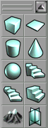
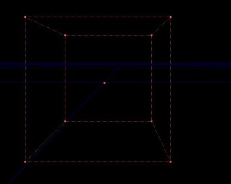
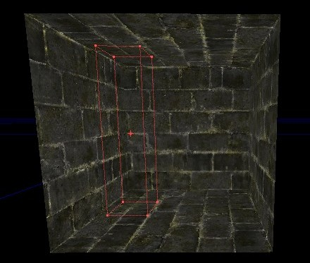
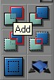
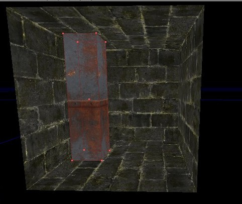

Subtraction And Addition
The Unreal Engine world theory is based on subtractive geometry. That means you start with a world filled of matter and you proceed to subtract areas, inside of which you can then add other solid patches.
Let's proceed with a graphic example: let's suppose you want to create a room with some sort of metal pipe inside of it. At the beginning your 3D UnrealEd Viewport appears all black,you need to give the Red-builder-brush a shape to make it appear. Click on the cube item in the top left corner of the brushbuilder constructor menu.

|
1.Below is the result you should obtain:

|
...Now go into the Texture Browser, and choose a nice texture for the wall of your room (a brick texture would be good)
![[AddSub2]](images/addsub2.jpeg) |
2.Click on the subtract Button from the brush operations menu(top-right)
Tada!..This is what you should get...
You have just removed the shape of the brush builder from the Solid world.
Now rescale your red-builder-brush using the brush scaling tool.Give it the shape of a (very basic) square pipe or something...

|
go into the Texture Browser, and choose a texture you find appropriate.

|
Click on the Add button from the brush operations menu(top-left)
Voila!

|
You have just added a new shape in a previously empty space.
Note that adding a brush into the solid world (or another solid brush) or removing a shape from the void will have no effect and furthemore could get the engine to make rendering artifacts and errors (see BSP hole)
Now I think you should have a good idea about substractive geometry,your next step should be to learn or to further manipulate the brush builder to create complex shapes, by using the brushbuilders in the toolbox.
Miscellaneous
(these more advanced point probably need a seperate page)
- Subtracting a brush often causes sheets to vanish. Should be fine after a Geometry rebuild.
See also
[Basic Brushwork Photo-Tutorial]